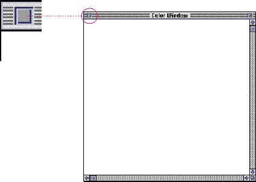
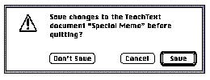

|
Closing a WindowPeople can close windows in a variety of ways. They can use the Close command in the File menu, use the keyboard equivalent Command-W, or click the close box. Figure 5-22 shows an enlarged view of the close box. Your application determines what happens with its windows visually and logically when the user closes them. The visible effects may make the window seem to retreat into an icon or to simply disappear. When a user closes a document window, your application must do something with any user data that may be in the window. The most common case is to save the information by writing it to disk and display it when the user opens the document again. In this case, store the position where the user placed the window on the screen and the last size in which the user had the window as described in "Window Positions," beginning on page 141. When you reopen it, use the size and position information to display the window. When a user closes a document window, your application must decide whether or not to write the information to disk. If the user has made changes to the contents of the document (the most common situation), display the save changes alert box described in Chapter 4, "Menus," in the section "Close" on page 80. This alert box is shown in Figure 5-23. In addition to saving the contents of the document, you should also store the user state (size and position) of the window and record whether the window was in the system or user state, as described in "The Zoom Box and Window Behavior" on page 156. Figure 5-23 The save changes alert box  If the user has not changed the contents of the document but has moved, resized, or zoomed the window, it's a good idea to save the new window state (size and position) information, but do not change the date stamp. In this situation, the information is saved without prompting the user with the save changes alert box. In either case, the window should have the same content, size, and position the next time the user opens the document (unless they decide not to save changes to the content of the document). |